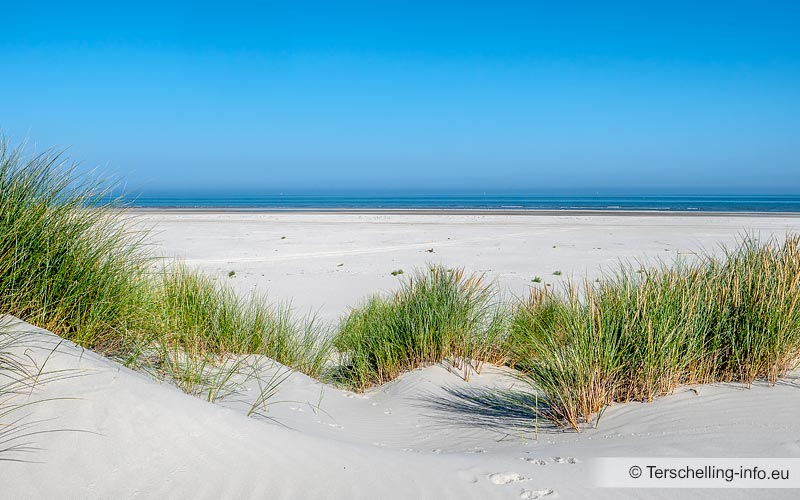

We gaan op vakantie naar Terschelling!

Daar is de zee en zijn er duinen en dieren en schelpen.
Zeekoeien, luiaards en capibara's zijn er dan weer niet. Maar wel meeuwen en zeehonden en grauwe ganzen.
Ook zijn er op Terschelling veel mooie plantjes, zoals de parnassia. Dat is een heel bijzonder bloemetje,
dat je vrijwel alleen in de duinen van Terschelling aantreft, als ik het goed heb onthouden.
We gaan in een
appartement, gelegen in een oude boerderij. Bij het appartement is een grote gezamenlijke tuin, met
hangmatten, een vuurplaats en een speeltoestel. Er is ook nog een sauna bij die je kan huren. Kortom, we
gaan een gezellig weekje tegemoet. Whoop Whoop!